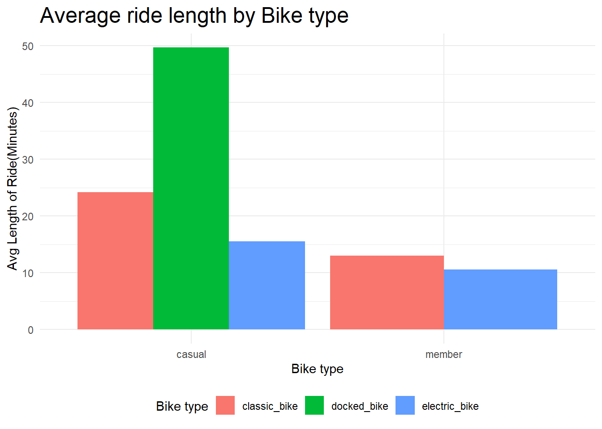
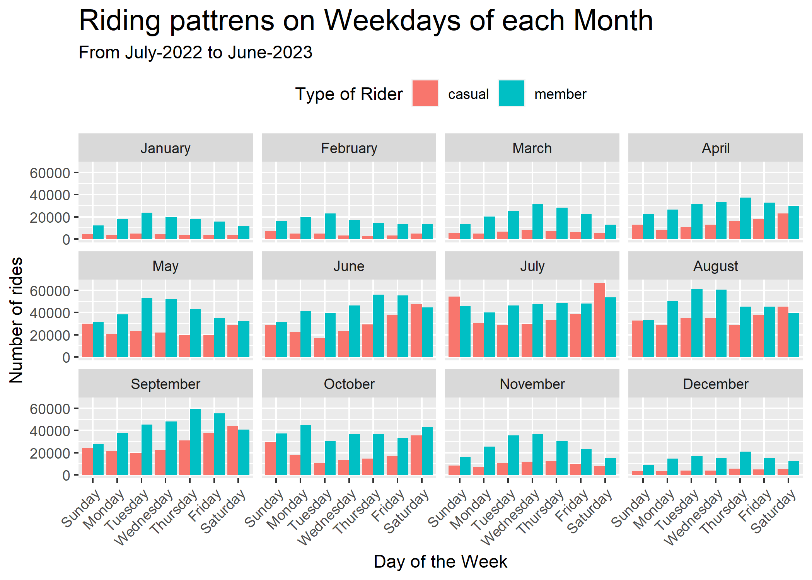
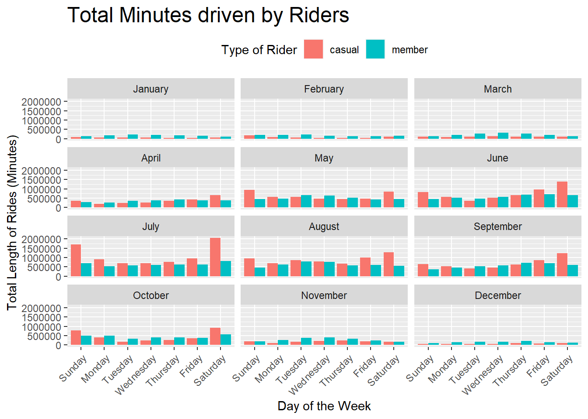
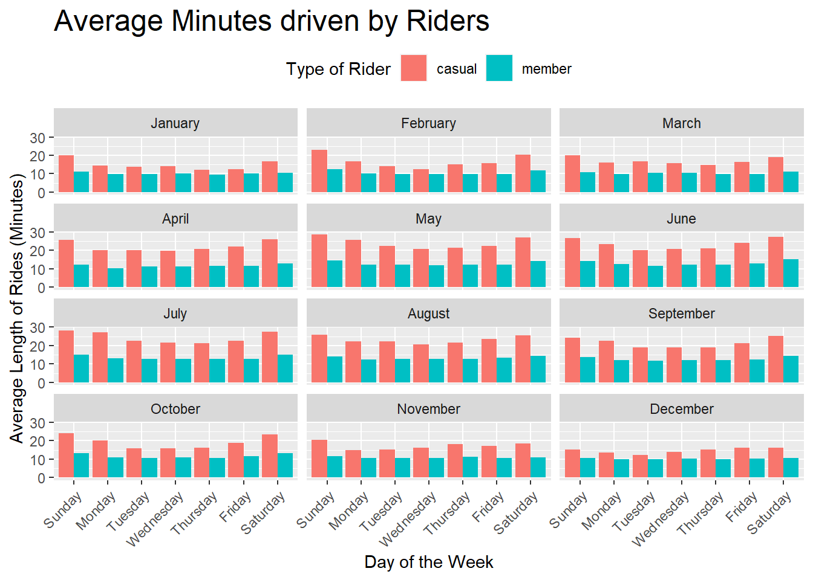

library(tidyverse)
library(gt)CYCLIST BIKE SHARE
Introduction
The analysis is done on Cyclist Trip Data obtained from Coursera Google Data Analytics course as part of Cap Stone Project.
The data contains month wise travel usage of bikes from the year of 2015-2023. We will be concentrating on data gathered in between July-2022 to June-2023 which will cover an entire year.
Let’s load the required packages first
- Loading
tidyverseandgtpackages
Loading and Formatting Data
- Let’s look at the structure of the data in one of the downloaded
.csvfiles.
trpdata_july_2022<-read_csv("F:/Data_Sci/Cap_Stone_Project/Cyclist_trip_data/202207-divvy-tripdata/202207-divvy-tripdata.csv")Rows: 823488 Columns: 13
── Column specification ────────────────────────────────────────────────────────
Delimiter: ","
chr (7): ride_id, rideable_type, start_station_name, start_station_id, end_...
dbl (4): start_lat, start_lng, end_lat, end_lng
dttm (2): started_at, ended_at
ℹ Use `spec()` to retrieve the full column specification for this data.
ℹ Specify the column types or set `show_col_types = FALSE` to quiet this message.Rows: 823,488
Columns: 13
$ ride_id <chr> "954144C2F67B1932", "292E027607D218B6", "5776585258…
$ rideable_type <chr> "classic_bike", "classic_bike", "classic_bike", "cl…
$ started_at <dttm> 2022-07-05 08:12:47, 2022-07-26 12:53:38, 2022-07-…
$ ended_at <dttm> 2022-07-05 08:24:32, 2022-07-26 12:55:31, 2022-07-…
$ start_station_name <chr> "Ashland Ave & Blackhawk St", "Buckingham Fountain …
$ start_station_id <chr> "13224", "15541", "15541", "15541", "TA1307000117",…
$ end_station_name <chr> "Kingsbury St & Kinzie St", "Michigan Ave & 8th St"…
$ end_station_id <chr> "KA1503000043", "623", "623", "TA1307000164", "TA13…
$ start_lat <dbl> 41.90707, 41.86962, 41.86962, 41.86962, 41.89147, 4…
$ start_lng <dbl> -87.66725, -87.62398, -87.62398, -87.62398, -87.626…
$ end_lat <dbl> 41.88918, 41.87277, 41.87277, 41.79526, 41.93625, 4…
$ end_lng <dbl> -87.63851, -87.62398, -87.62398, -87.59647, -87.652…
$ member_casual <chr> "member", "casual", "casual", "casual", "member", "…- Let’s look at the columns and try to understand what they represent
ride_idis the unique identification token generated for each ride that was initiated.rideable_typeindicates the type of bike used for the ride.started_atandended_atgive us the time when the ride began and the ride ended respectively.start_station_nameandend_station_namegive us the names of stations where ride began and ended respectively.start_station_idandend_station_idare unique ID’s given to stations.start_latandstart_lngrepresent co-ordinates where the ride began.end_latandend_lngrepresent co-ordinates where the ride stopped.member_casualidentifies if the rider is a member or casual rider of the bike.
The trpdata_july_2022 contains 823488 rows and 13 columns. In the results we can see all the columns and their data types.
- Lets load data of remaining 11 months.
trpdata_aug_2022 <- read_csv("F:/Data_Sci/Cap_Stone_Project/Cyclist_trip_data/202208-divvy-tripdata/202208-divvy-tripdata.csv")
trpdata_sept_2022<- read_csv("F:/Data_Sci/Cap_Stone_Project/Cyclist_trip_data/202209-divvy-tripdata/202209-divvy-publictripdata.csv")
trpdata_oct_2022<- read_csv("F:/Data_Sci/Cap_Stone_Project/Cyclist_trip_data/202210-divvy-tripdata/202210-divvy-tripdata_raw.csv")
trpdata_nov_2022<- read_csv("F:/Data_Sci/Cap_Stone_Project/Cyclist_trip_data/202211-divvy-tripdata/202211-divvy-tripdata.csv")
trpdata_dec_2022 <- read_csv("F:/Data_Sci/Cap_Stone_Project/Cyclist_trip_data/202212-divvy-tripdata/202212-divvy-tripdata.csv")
trpdata_jan_2023 <- read_csv("F:/Data_Sci/Cap_Stone_Project/Cyclist_trip_data/202301-divvy-tripdata/202301-divvy-tripdata.csv")
trpdata_feb_2023 <- read_csv("F:/Data_Sci/Cap_Stone_Project/Cyclist_trip_data/202302-divvy-tripdata/202302-divvy-tripdata.csv")
trpdata_mar_2023 <- read_csv("F:/Data_Sci/Cap_Stone_Project/Cyclist_trip_data/202303-divvy-tripdata/202303-divvy-tripdata.csv")
trpdata_apr_2023 <- read_csv("F:/Data_Sci/Cap_Stone_Project/Cyclist_trip_data/202304-divvy-tripdata/202304-divvy-tripdata.csv")
trpdata_may_2023 <- read_csv("F:/Data_Sci/Cap_Stone_Project/Cyclist_trip_data/202305-divvy-tripdata/202305-divvy-tripdata.csv")
trpdata_june_2023 <- read_csv("F:/Data_Sci/Cap_Stone_Project/Cyclist_trip_data/202306-divvy-tripdata/202306-divvy-tripdata.csv")As structure of .csv’s is same across the all the files lets combine all the .csv files into a single data frame which contains data of all 12 months.
- Combining all the monthly data to one previous year data(
data_one_year).
data_one_year <- rbind(trpdata_july_2022, trpdata_aug_2022,
trpdata_sept_2022, trpdata_oct_2022,
trpdata_nov_2022, trpdata_dec_2022,
trpdata_jan_2023, trpdata_feb_2023,
trpdata_mar_2023, trpdata_apr_2023,
trpdata_may_2023, trpdata_june_2023)
glimpse(data_one_year)Rows: 5,779,444
Columns: 13
$ ride_id <chr> "954144C2F67B1932", "292E027607D218B6", "5776585258…
$ rideable_type <chr> "classic_bike", "classic_bike", "classic_bike", "cl…
$ started_at <dttm> 2022-07-05 08:12:47, 2022-07-26 12:53:38, 2022-07-…
$ ended_at <dttm> 2022-07-05 08:24:32, 2022-07-26 12:55:31, 2022-07-…
$ start_station_name <chr> "Ashland Ave & Blackhawk St", "Buckingham Fountain …
$ start_station_id <chr> "13224", "15541", "15541", "15541", "TA1307000117",…
$ end_station_name <chr> "Kingsbury St & Kinzie St", "Michigan Ave & 8th St"…
$ end_station_id <chr> "KA1503000043", "623", "623", "TA1307000164", "TA13…
$ start_lat <dbl> 41.90707, 41.86962, 41.86962, 41.86962, 41.89147, 4…
$ start_lng <dbl> -87.66725, -87.62398, -87.62398, -87.62398, -87.626…
$ end_lat <dbl> 41.88918, 41.87277, 41.87277, 41.79526, 41.93625, 4…
$ end_lng <dbl> -87.63851, -87.62398, -87.62398, -87.59647, -87.652…
$ member_casual <chr> "member", "casual", "casual", "casual", "member", "…data_one_yeardata frame contains data from July-2022 to June-2023.
Cleaning the data
- Checking and counting “NA” in each column of the data frame. Data is much better without “NA” as they can cause problems while aggregating data and calculating averages and sums.
ride_id rideable_type started_at ended_at
0 0 0 0
start_station_name start_station_id end_station_name end_station_id
857860 857992 915655 915796
start_lat start_lng end_lat end_lng
0 0 5795 5795
member_casual
0 As NA’s are not present in the times columns i.e,
started_atandended_atwe don’t need to worry ourselves about writingna.rmduring aggregation and manipulation of data.Finding the length of rides by making a new column
ride_lengthin minutes and making sure that theride_lengthis not negative by usingif_elsefunction. Eliminating stations where station names and longitude and latitude co-ordinates are not present.
data_one_year <- data_one_year %>%
mutate(ride_length = difftime(ended_at, started_at,
units = "min")) %>%
mutate(ride_length = as.numeric(ride_length)) %>%
mutate(ride_length = if_else(ride_length < 0, 0, ride_length)) %>%
filter(start_station_name != "" & end_station_name != "" &
!is.na(start_lat) & !is.na(start_lng) &
!is.na(end_lat) & !is.na(end_lng)) %>% arrange(ride_length)
glimpse(data_one_year)Rows: 4,409,335
Columns: 14
$ ride_id <chr> "86CD09DA24761714", "27024CD08288BD45", "029D853B5C…
$ rideable_type <chr> "electric_bike", "electric_bike", "classic_bike", "…
$ started_at <dttm> 2022-07-20 16:21:48, 2022-07-30 23:42:46, 2022-07-…
$ ended_at <dttm> 2022-07-20 16:21:48, 2022-07-30 23:42:46, 2022-07-…
$ start_station_name <chr> "Racine Ave & Fullerton Ave", "Albany Ave & 26th St…
$ start_station_id <chr> "TA1306000026", "15691", "chargingstx5", "chargings…
$ end_station_name <chr> "Racine Ave & Fullerton Ave", "Albany Ave & 26th St…
$ end_station_id <chr> "TA1306000026", "15691", "chargingstx5", "chargings…
$ start_lat <dbl> 41.92556, 41.84452, 41.94335, 41.94335, 41.94335, 4…
$ start_lng <dbl> -87.65859, -87.70209, -87.67067, -87.67067, -87.670…
$ end_lat <dbl> 41.92556, 41.84448, 41.94335, 41.94335, 41.94335, 4…
$ end_lng <dbl> -87.65840, -87.70201, -87.67067, -87.67067, -87.670…
$ member_casual <chr> "member", "casual", "member", "member", "casual", "…
$ ride_length <dbl> 0, 0, 0, 0, 0, 0, 0, 0, 0, 0, 0, 0, 0, 0, 0, 0, 0, …Analysis of Data
Aggregating data by Rider type and Bike type.
- Aggregating data to see “Average minutes per ride” grouped by “bike type” and “rider type” after removing rides less than 2 minutes (As rides less than 2 minutes tend to have the same start and stop stations.).
data_one_year_aggregate <- data_one_year%>%
select(ride_id, rideable_type, member_casual, started_at, ended_at,
ride_length, everything()) %>%
filter(ride_length >= 2) %>%
summarise("Number of Rides" = n(),
"Ride Length" = sum(ride_length, na.rm = TRUE),
"Max Ride Length" = round(max(ride_length), 2),
"Avg Ride Length in Minutes" = round(mean(ride_length), 2),
.by = c(member_casual, rideable_type)) %>%
arrange(desc("Avg Ride Length in Minutes")) %>%
gt() %>% tab_header(title = "Average length of Rides") %>%
cols_label(member_casual = "Rider type",
rideable_type = "Bike type")
data_one_year_aggregate| Average length of Rides | |||||
| Rider type | Bike type | Number of Rides | Ride Length | Max Ride Length | Avg Ride Length in Minutes |
|---|---|---|---|---|---|
| member | classic_bike | 1630991 | 21996488 | 1497.87 | 13.49 |
| casual | classic_bike | 781530 | 19383358 | 1497.75 | 24.80 |
| casual | electric_bike | 709649 | 11372659 | 479.98 | 16.03 |
| member | electric_bike | 984688 | 10968684 | 480.00 | 11.14 |
| casual | docked_bike | 136794 | 6899998 | 32035.45 | 50.44 |
We can clearly notice in Table 1 that member riders have more number of rides with both classic and electric bikes while the average ride length is higher with casual riders.
- Calculating and visualizing Average ride length by “Rider type”.
average_ride_by_rideable_type <- data_one_year %>%
rename("Rider type" = member_casual, "Bike type" = rideable_type) %>%
summarise(ride_length = sum(ride_length, na.rm = TRUE),
ride_count = n(),
avg_ride_length = ride_length/ride_count,
.by = c(`Rider type`, `Bike type`)) %>%
ggplot(aes(`Rider type`, avg_ride_length)) +
geom_col(aes(fill = `Bike type`), position = "dodge") +
labs(x = "Bike type", y = "Avg Length of Ride(Minutes)",
title = "Average ride length by Bike type") +
theme_minimal() +
theme(plot.title = element_text(size = 18),
legend.position = "bottom")
average_ride_by_rideable_type
The above Figure 1 clearly shows that members average ride lengths between bike types doesn’t differ much for member riders but differs with casual riders upto 8 minutes.
Further down in the analysis “docked_bike” type is dropped as no proper documentation is available in the course.
Analysing data by Time of the year and Ride Length
- Calculating and visualizing ride patterns in a week for number of rides.
rideable_order <- c("classic_bike", "electric_bike", "docked_bike")
rides_on_days <- data_one_year %>%
filter(rideable_type != "docked_bike") %>%
mutate(month = month(started_at, label = TRUE, abbr = FALSE)) %>%
mutate(rideable_type = factor(rideable_type, levels = rideable_order)) %>% ggplot(aes(wday(started_at, label = TRUE, abbr = FALSE))) +
geom_bar(aes(fill = member_casual), position = "dodge") +
facet_wrap(~month, nrow = 3) +
labs(x = "Day of the Week", y = "Number of rides",
title = "Riding pattrens on Weekdays of each Month",
subtitle = "From July-2022 to June-2023",
fill = "Type of Rider") +
theme(legend.position = "top",
axis.text.x = element_text(angle = 45, hjust = 1),
plot.title = element_text(size = 18))
rides_on_days
The above Figure 2 clearly shows how the number of rides change due to seasons. In winters the number of rides decrease very drastically may be because of temperature and snow. In Summers the number of rides are at its peak.
The number of rides driven by member riders are increases through the week especially in working week days but for casual riders the rides increase in the weekends. The Figure 2 shows number of rides on Saturdays and Sundays by casual members overtake membership riders in the months of July and August.
- Comparing variation in ride lengths of average and total ride lengths by bike type.
Aggregating data for the visualization.
rides_on_days <- data_one_year %>%
mutate(day = wday(started_at, label = TRUE, abbr = FALSE),
month = month(started_at, label = TRUE, abbr = FALSE)) %>%
summarise(ride_count = n(),
sum_ride_length = sum(ride_length, na.rm = TRUE),
avg_ride_length = mean(ride_length, na.rm = TRUE),
.by = c(month, day, member_casual))
rides_on_days# A tibble: 168 × 6
month day member_casual ride_count sum_ride_length avg_ride_length
<ord> <ord> <chr> <int> <dbl> <dbl>
1 July Wednesday member 47725 605175. 12.7
2 July Saturday casual 74543 2057158. 27.6
3 July Tuesday member 46360 588327. 12.7
4 July Tuesday casual 31415 705946. 22.5
5 July Saturday member 53796 817724. 15.2
6 July Friday casual 42333 960160 22.7
7 July Thursday casual 35800 759804. 21.2
8 July Sunday casual 61198 1715527. 28.0
9 July Thursday member 48572 623503. 12.8
10 July Friday member 48221 616243. 12.8
# ℹ 158 more rowsLet’s visualize the aggregated data
rides_on_days_len <- rides_on_days %>%
ggplot(aes(day, sum_ride_length))+
geom_col(aes(fill = member_casual), position = "dodge")+
facet_wrap(~month, ncol = 3)+
labs(x = "Day of the Week", y = "Total Length of Rides (Minutes)",
title = "Total Minutes driven by Riders",
fill = "Type of Rider") +
theme(legend.position = "top",
axis.text.x = element_text(angle = 45, hjust = 1),
plot.title = element_text(size = 18))
rides_on_days_len
rides_on_days_len_avg <- rides_on_days %>%
ggplot(aes(day, avg_ride_length))+
geom_col(aes(fill = member_casual), position = "dodge")+
facet_wrap(~month, ncol = 3) +
labs(x = "Day of the Week", y = "Average Length of Rides (Minutes)",
title = "Average Minutes driven by Riders",
fill = "Type of Rider") +
theme(legend.position = "top",
axis.text.x = element_text(angle = 45, hjust = 1),
plot.title = element_text(size = 18))
rides_on_days_len_avg
The ride length is varying across months and seasons just as number of rides but average ride length is not fluctuating that much across the year.
Analysing of Stations and Routes.
- Removing “NA” and blanks from the stations columns.
data_one_year <- data_one_year %>%
drop_na(start_station_name, end_station_name ) %>%
filter(start_station_name != "" & end_station_name != "",
started_at != ended_at)
glimpse(data_one_year)Rows: 4,409,072
Columns: 14
$ ride_id <chr> "029D853B5C38426E", "C1D6D749139CB6C0", "D3E7C0B68E…
$ rideable_type <chr> "classic_bike", "classic_bike", "classic_bike", "cl…
$ started_at <dttm> 2022-07-26 20:07:33, 2022-07-26 20:08:04, 2022-07-…
$ ended_at <dttm> 2022-07-26 19:59:34, 2022-07-26 19:59:34, 2022-07-…
$ start_station_name <chr> "Lincoln Ave & Roscoe St*", "Lincoln Ave & Roscoe S…
$ start_station_id <chr> "chargingstx5", "chargingstx5", "chargingstx5", "ch…
$ end_station_name <chr> "Lincoln Ave & Roscoe St*", "Lincoln Ave & Roscoe S…
$ end_station_id <chr> "chargingstx5", "chargingstx5", "chargingstx5", "ch…
$ start_lat <dbl> 41.94335, 41.94335, 41.94335, 41.94335, 41.93945, 4…
$ start_lng <dbl> -87.67067, -87.67067, -87.67067, -87.67067, -87.663…
$ end_lat <dbl> 41.94335, 41.94335, 41.94335, 41.94335, 41.93948, 4…
$ end_lng <dbl> -87.67067, -87.67067, -87.67067, -87.67067, -87.663…
$ member_casual <chr> "member", "member", "casual", "casual", "member", "…
$ ride_length <dbl> 0, 0, 0, 0, 0, 0, 0, 0, 0, 0, 0, 0, 0, 0, 0, 0, 0, …- Making a new column to identify travelled routes.
data_one_year <- data_one_year %>%
mutate(stations_travelled = paste(start_station_name,
"-", end_station_name))
glimpse(data_one_year)Rows: 4,409,072
Columns: 15
$ ride_id <chr> "029D853B5C38426E", "C1D6D749139CB6C0", "D3E7C0B68E…
$ rideable_type <chr> "classic_bike", "classic_bike", "classic_bike", "cl…
$ started_at <dttm> 2022-07-26 20:07:33, 2022-07-26 20:08:04, 2022-07-…
$ ended_at <dttm> 2022-07-26 19:59:34, 2022-07-26 19:59:34, 2022-07-…
$ start_station_name <chr> "Lincoln Ave & Roscoe St*", "Lincoln Ave & Roscoe S…
$ start_station_id <chr> "chargingstx5", "chargingstx5", "chargingstx5", "ch…
$ end_station_name <chr> "Lincoln Ave & Roscoe St*", "Lincoln Ave & Roscoe S…
$ end_station_id <chr> "chargingstx5", "chargingstx5", "chargingstx5", "ch…
$ start_lat <dbl> 41.94335, 41.94335, 41.94335, 41.94335, 41.93945, 4…
$ start_lng <dbl> -87.67067, -87.67067, -87.67067, -87.67067, -87.663…
$ end_lat <dbl> 41.94335, 41.94335, 41.94335, 41.94335, 41.93948, 4…
$ end_lng <dbl> -87.67067, -87.67067, -87.67067, -87.67067, -87.663…
$ member_casual <chr> "member", "member", "casual", "casual", "member", "…
$ ride_length <dbl> 0, 0, 0, 0, 0, 0, 0, 0, 0, 0, 0, 0, 0, 0, 0, 0, 0, …
$ stations_travelled <chr> "Lincoln Ave & Roscoe St* - Lincoln Ave & Roscoe St…- Finding which route is most traveled by casual riders.
most_travelled_routes_casual <- data_one_year %>%
filter(member_casual == "casual") %>%
summarise(ride_count = n(),
avg_ride_length = round(mean(ride_length), 2),
.by = c(stations_travelled)) %>%
arrange(desc(ride_count))
head(most_travelled_routes_casual)# A tibble: 6 × 3
stations_travelled ride_count avg_ride_length
<chr> <int> <dbl>
1 Streeter Dr & Grand Ave - Streeter Dr & Grand Ave 9698 39.6
2 DuSable Lake Shore Dr & Monroe St - DuSable Lake S… 6584 33.4
3 DuSable Lake Shore Dr & Monroe St - Streeter Dr & … 4840 27.1
4 Michigan Ave & Oak St - Michigan Ave & Oak St 4292 44.6
5 Millennium Park - Millennium Park 3884 37.4
6 Montrose Harbor - Montrose Harbor 2711 48.3[1] 130660Streeter Dr & Grand Ave - Streeter Dr & Grand Ave stands to be the most popular station with 9698 rides by casual riders.
most_travelled_routes_member <- data_one_year %>%
filter(member_casual == "member") %>%
summarise(ride_count = n(),
total_ride_length = sum(ride_length),
ride_length = round(mean(ride_length), 2),
.by = stations_travelled) %>% arrange(desc(ride_count))
head(most_travelled_routes_member)# A tibble: 6 × 4
stations_travelled ride_count total_ride_length ride_length
<chr> <int> <dbl> <dbl>
1 Ellis Ave & 60th St - University Ave… 6153 25936. 4.22
2 University Ave & 57th St - Ellis Ave… 5786 26634. 4.6
3 Ellis Ave & 60th St - Ellis Ave & 55… 5676 28427. 5.01
4 Ellis Ave & 55th St - Ellis Ave & 60… 5347 27187. 5.08
5 State St & 33rd St - Calumet Ave & 3… 4156 18014. 4.33
6 Calumet Ave & 33rd St - State St & 3… 4027 15887. 3.95[1] 145104Ellis Ave & 60th St - University Ave & 57th St stands as the most traveled route by member riders with 6153 rides per anum.
- Finding which station has most ride starting points and which station has most ending points.
most_starting_points <- data_one_year %>%
summarise(ride_count = n(),
.by = c(start_station_name, end_station_name)) %>%
select(start_station_name, ride_count) %>%
slice_max(ride_count, n = 10)
most_starting_points# A tibble: 10 × 2
start_station_name ride_count
<chr> <int>
1 Streeter Dr & Grand Ave 11186
2 Ellis Ave & 60th St 7423
3 DuSable Lake Shore Dr & Monroe St 7362
4 Ellis Ave & 60th St 7181
5 University Ave & 57th St 6961
6 Ellis Ave & 55th St 6728
7 DuSable Lake Shore Dr & Monroe St 5348
8 Michigan Ave & Oak St 5329
9 State St & 33rd St 4390
10 Millennium Park 4305[1] 66213most_ending_points <- data_one_year %>%
summarise(ride_count = n(),
.by = end_station_name) %>%
select(end_station_name, ride_count) %>%
slice_max(ride_count, n = 10)
most_ending_points# A tibble: 10 × 2
end_station_name ride_count
<chr> <int>
1 Streeter Dr & Grand Ave 67536
2 DuSable Lake Shore Dr & North Blvd 38026
3 Michigan Ave & Oak St 36976
4 DuSable Lake Shore Dr & Monroe St 36806
5 Wells St & Concord Ln 33814
6 Clark St & Elm St 32325
7 Millennium Park 32046
8 Kingsbury St & Kinzie St 31058
9 Theater on the Lake 30214
10 Wells St & Elm St 28212[1] 367013Streeter Dr & Grand Ave found to be the most popular station as most rides start and end at that station.